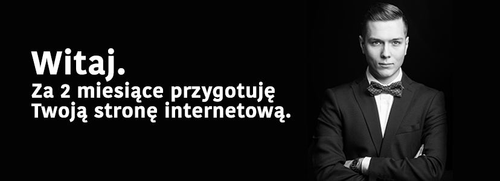

O mnie
Pracuję w branży rozrywkowej 8 lat. Jestem managerem artystycznym, specjalistą ds. wizerunku, doradzam i współpracuję z klubami współtworząc ich profil artystyczny. Organizuję konferencje dla dużych, międzynarodowych firm, współpracuję z najlepszymi przedstawicielami branży oświetleniowej i nagłośnieniowej, artystami, konferansjerami, muzykami, wokalistami i dj’ami.
Odpowiadałem za część artystyczną eventów m.in takich jak: Motor Show VIP Night (Poznań), Gran Turismo Polonia (Poznań), Camerimage FIlm Festival (Bydgoszcz) etc. Tworzyłem oprawę muzyczną dla jednego z najbardziej ekskluzywnych hoteli w Polsce - Hotelu Blow Up Hall 50/50 w Poznaniu. Byłem przedstawicielem polskich firm i brandów muzycznych na międzynarodowych targach muzycznych w Berlinie, Frankfurcie i Paryżu.
W 2014 roku byłem jedynym akredytowanym dziennikarzem z Polski na międzynarodowym festiwalu muzyki elektronicznej ADE (Amsterdam Dance Event).
Współpracuję z Fundacją Tumult, organizatorem Festiwalu Camerimage, co roku współtworząc wspaniałą atmosferę klubu festiwalowego. Również na tym festiwalu stworzyłem oprawę muzyczną gali finałowej XIX Festiwalu Camerimage współpracując przy reżyserii wydarzenia z Krzysztofem Materną.
Jestem też muzykiem i dj’em, regularnie podróżuję po całej Polsce występując w najbardziej cenionych house’owych klubach naszego kraju.
Pół roku temu zacząłem uczyć się kodowania. Otowrzyło to przede mną perspektywy o których nie miałem dotąd pojęcia. Chciałbym w przyszłości całowicie poświęcić się tworzeniu aplikacji muzyczno-społecznościowych.